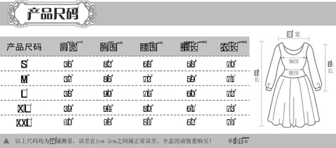
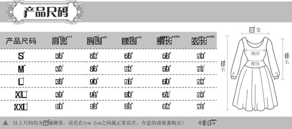
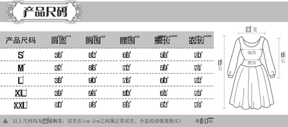

Лаборатория решает задачи анализа данных на заказ. Выделяются четыре типа услуг: сбор данных, обработка, анализ и визуализация. Заказчик редко приходит с готовыми данными, поэтому в лаборатории накоплен опыт по сбору и обработке информации из открытых источников. Результат анализа — код и отчёт. Отчёт состоит из текста и иллюстраций. Чтобы иллюстрации получались понятные и красивые, набили руку в визуализации.
Сбор данных
Иногда данных, накопленных бизнесом, нет или их недостаточно для решения задачи. В таких случаях мы обращаемся к открытым источникам и платным базам данных.Социальные сети
Мы собираем данные из ВКонтакте и более сложных для обработки сетей: Twitter, Instagram и LinkedIn.Интернет
Лабораторный кластер скачивает 106 страниц в час и обрабатывает сложные ситуации: капчи, блокировки.


Государственные данные
В России немало государственных данных открыто: закупки, результаты выборов, данные о внешней торговле. Мы следим за такими источниками и разбираемся в их содержании.Закрытые базы данных
Существует масса платных баз данных: Similarweb, Builtwith. Если заказчик согласен, мы их используем.
Владислав Комиссаров, директор по развитию, Интерфакс:
«Мы заказывали в лаборатории сбор и обработку данных. Своих рук на всё не хватает. Радует гибкий подход: о полях и формате выгрузки всегда можно договориться.»
Извлечение фактов из текста
Из произвольного текста на английском или русском языке мы умеем извлекать имена, адреса, даты и названия компаний.Нормализация данных
Для объединения разных источников, мы приводим их к нормальной форме.
Выражаем благодарность Анисимовой Вере Николаевне, воспитательнице ДО «Солнышко»...
Михаил Танский, руководитель Хантфлоу:
«В Хантфлоу из резюме автоматически извлекается фотография кандидата, его имя, возраст, опыт и желаемая должность. Понравилось, что работы были сделаны в срок, у нас не возникло проблем с интеграцией и распознавание сразу заработало с хорошим качеством.»
Ручная разметка
Иногда обработать данные автоматически не получается. Тогда мы максимально оптимизируем процесс разметки и собираем данные вручную.OCR
Иногда нужно работать с текстом на изображениях. Когда Finereader и Tesseract не справляются, разрабатываются специальные решения.



 


| m11 | m21 | m31 | m41 | m51 | |
|---|---|---|---|---|---|
| s | 36 | 82 | 68 | 58 | 70l |
| m | 37 | 86 | 72 | 59 | 71 |
| l | 38 | 90 | 76 | 60 | 72 |
| xl | 39 | 94 | 80 | 61 | 73 |
| xl | 40 | 98 | 84 | 62 | 74 |
Описательный анализ
Когда данные собраны и обработаны, первым делом, мы разбираемся, как они устроены. Строим графики, придумываем и проверяем гипотезы. Из публичного: «анализ резюме», «анализ ЕГЭ», «исследование думских выборов», «исследование ДТП».Классификация сайтов
Для задачи анализа рынка мы выделяем сайты заданной тематики: новостные сайты, интернет магазины. Для этого используем граф похожих сайтов и и полуавтоматический классификатор сайтов.Классификация текстов
Для систем родительского контроля мы определяем содержание страниц: порно, наркотики, суицид.Классификация изображений
Чтобы выделить аккаунты организаций в социальных сетях, мы ищем лица на аватарках. Если лица нет, значит организация.


Екатерина Базилевская, руководитель, Look At Media
«Мы делали в лаборатории кучу исследований: анализ рынка, конкурентный анализ, сбор контактов для HR и продаж. Удобно, что такие разные исследования можно получить в одном месте, а не собирать по кусочкам.»